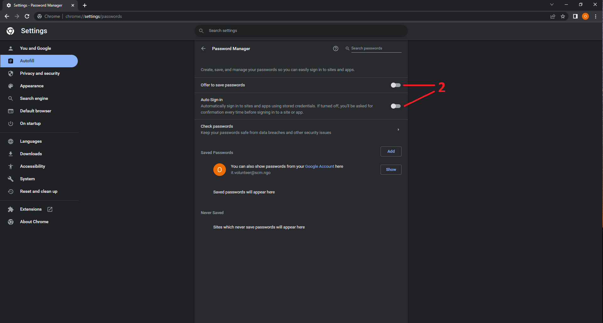
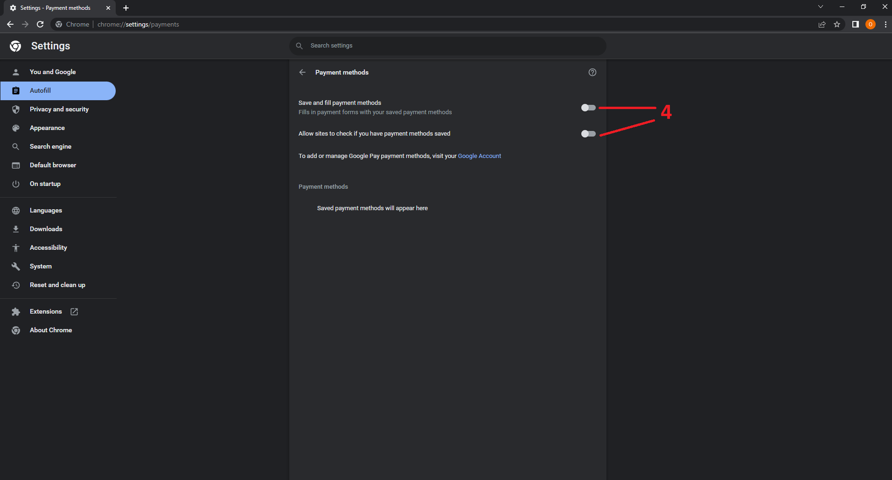
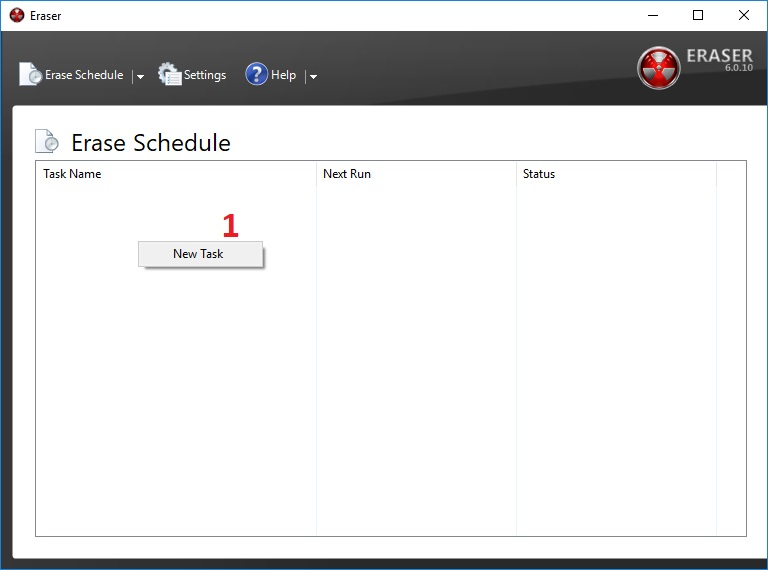
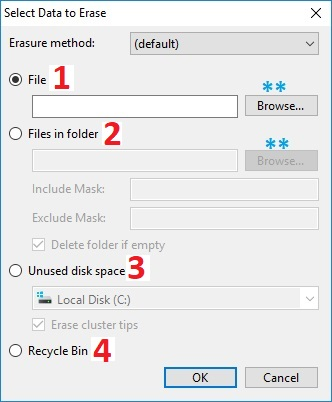
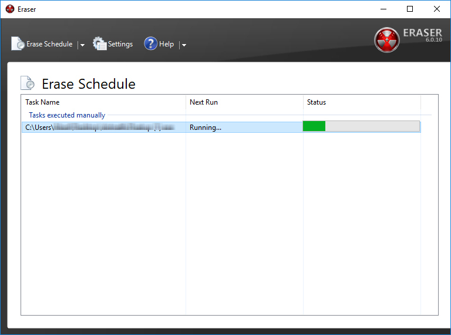

Bitwarden || بت فاردن
الاسم: بت فاردن
المهمة: حفط بيانات تسجيل الدخول لكافة الحسابات،
أي حفظ: "اسم المستخدم وكلمة المرور"
أنظمة التشغيل التي يعمل عليها: ويندوز و ماك
الثمن: مجاني
كيف يعمل؟
يحفظ كلمات السر وبيانات تسجيل الدخول المهمة بشكل آمن وسري وسهل الاستخدام، كما يمكن من خلاله مشاركة كلمات السر وبيانات البطاقات البنكية بين الأجهزة الشخصية عن طريق إنشاء حساب، ثم تسجيل الدخول إليه بكلمة سر رئيسية على مختلف الأجهزة الشخصية
هل يستطيع ملّاك أو مطوروا تطبيق بت فاردن الوصول إلى بيانات المستخدمين؟
لا بالتأكيد، لأن كلمات السر المحفوظة خلال التطبيق يتم تشفيرها قبل أن يتم تخزينها بحيث لا يستطيع أحد الوصول إليها إلا بعد فك التشفير عنها، وهو أمر شبه مستحيل. يمكن الوصول إلى كلمات السر الخاصة بنا عن طريق تسجيل الدخول بكلمة سر رئيسية فقط.
ما هي كلمة السر الرئيسية؟
هي كلمة السر الوحيدة التي يتوجب عليك حفظها في مكان آمن يسهل الرجوع إليه عند الحاجه، يتم إنشاؤها بشكل تلقائي عن طريق مولّد كلمات سر بت فاردن عند إنشاء الحساب، يتوجب عليك استخدامها لتسجيل الدخول بها عند الحاجه للوصول لكلمات السر المخزنة على حساب بت فاردن، لذلك تعتبر رئيسية لأهميتها
في حال نسيان كلمة السر الرئيسية!
في حال نسيان كلمة السر الرئيسية، لا يمكن إعادة تعيينها أو استعادتها، وبالتالي لا يمكن الوصول لبيانات تسجيل الدخول المحفوظة على الحساب مرة أخرى ويعتبر الحساب في هذه الحالة بلا فائدة
يتكون هذا الدليل من ثلاثة أقسام رئيسية :
- إنشاء حساب على موقع بت فاردن
- إلغاء حفظ المتصفح للبيانات الشخصية
- إضافة بت فاردن إلى المتصفح وطريقة الاستخدام سوف نستخدم متصفح جوجل كروم في هذا الدليل، حيث يعتبر المتصفح الأكثر استخداماَ في الوقت الحالي.
1- إنشاء حساب على موقع بت فاردن
-
الوصول إلى الموقع:
-
عن طريق الرابط هنا
تظهر الصفحة التالية، نضغط على "Get Started"
-
عن طريق الرابط هنا
- تظهر الصفحة التالية، نملأ الحقول كالتالي:
- الايميل الشخصي
- الاسم
- كلمة السر الرئيسية
- تأكيد لكلمة السر الرئيسية مرة أخرى
- نكتب تلميح عن كلمة السر الرئيسية، مثلا: تلميح عن مكان حفظها في حالة نسيانها للعودة إليها
- نضغط على المربع لتظهر اشارة [㇢]
- نضغط "Create Account"

-
تظهر الصفحة التالية:
نضغط على "Send Email" لتأكيد الايميل الالكتروني

- - كيف يتم تأكيد الايميل الالكتروني؟
- عند الضغط على "Send Email" يتم إرسال بريد الكتروني إلى ايميلك الشخصي الذي أدخلته في الخطوة السابقة
- نفتح الايميل الشخصي ثم نضغط على البريد الوارد ونبحث عن رسالة بعنوان "Bitwarden - Verify You Email"
- نفتح هذه الرسالة ونضغط على "Verify Email Address Now"
- عند الضغط على "Verify Email Address Now" يتم تحويل الصفحة إلى صفحة تسجيل الدخول الخاصة بموقع بت فاردن
- نسجل الدخول بالايميل وكلمة السر الرئيسية اللذين تم إدخالهما في الخطوة الثانية
-
تظهر الصفحة التالية وتعني أنه تم تفعيل وإنشاء الحساب بنجاح

2- إلغاء حفظ المتصفح للبيانات الشخصية
-
بعد إنشاء الحساب كما هو موضح في الخطوات السابقة، نفتح متصفح جوجل كروم
-
في أعلى يمين الشاشة، نضغط على صورة الحرف بجانب النقاط الثلاثة، تحت علامة X
يمكن أن يكون الحرف مختلف، لا مشكلة في ذلك-
عند الضغط على صورة الحرف تظهر القائمة التالية أسفل الصورة مباشرةَ
- نضغط على صورة المفتاح الصغيرة الموضحة كما في الصورة
-
نتأكد من إلغاء أو إغلاق الخيارين المشار إليهما بحيث يكونان كما في الصورة
بإلغاء هذين الخيارين لن يقدم لك المتصفح خيار حفظ بيانات تسجيل الدخول مرة أخرى، كما أنه لن يملأ حقول بيانات تسجيل الدخول بشكل تلقائي مرة أخرى  -
في نفس الصفحة، نضغط على صورة الحرف الصغيرة في أعلى يمين الشاشة كما في الخطوة الأولى، ثم نضغط على
الدائرة في المنتصف كما هو موضح، وتعني الدخول إلى إعدادات بطاقات الدفع الالكتروني

-
نتأكد من إلغاء أو إغلاق الخيارين المشار إليهما بحيث يكونان كما في الصورة التالية
بإلغاء هذين الخيارين لن يقوم المتصفح بحفظ بيانات البطاقات البنكية والدفع الالكتروني، كما لن يقوم بملئ هذه الحقول بشكل تلقائي مرة أخرى  -
في نفس الصفحة، نضغط على صورة الحرف الصغيرة في أعلى يمين الشاشة كما في الخطوة الأولى، ثم نضغط على
الدائرة الأخير كما في الصورة التالية وتعني الدخول إلى إعدادات الموقع والعناوين الشخصية

-
تظهر الصفحة التالية، نتأكد من إلغاء أو إغلاق الخيار المشار إليه بحيث يكون كما في الصورة
بإلغاء هذا الخيار لن يقوم المتصفح بحفظ عنوانك أو موقعك الحالي ولن يقوم بملئ هذه البيانات في الحقول التي تطلبها مرة أخرى

3- جدولة بعض الملفات للحذف
-
يمكن إضافة (جدولة) حذف عدد من الملفات والمجلدات وخيارات اُخرى
-
من الصفحة الرئيسية للبرنامج،
نضغط باليمين داخل المساحة البيضاء، ثم نضغط على الخيار "New Task"
 -
تظهر الصفحة التالية:
نضغط على الخيار" Add Data"
 تظهر الصفحة التالية "Select Data to Erase"
تظهر الصفحة التالية "Select Data to Erase" - الخيار File: لتحديد ملف
يتم تحديد الملف من الخيار Browse - الخيار Files in folder: تحديد عدة ملفات داخل المجلد
يتم تحديد الملفات من الخيار Browse - الخيار Unused disk space: لحذف (تنظيف) المساحة الفارغة في أحد الأقراص الصلبة أو وحدة التخزين (فلاش ميموري) يستخدم هذا الخيار، لتدمير الملفات والمجلدات التي تم حذفها بالطريقة التقليدية، قبل تنصيب برنامج "إيريزر"
- خيار Recycle Bin: لحذف الملفات والمجلدات التي داخل "سلة المحذوفات" بعد تحديد الخيار المناسب.
- نذهب إلى Erasure method حيث يمكننا تحديد عدد مرات الكتابة فوق الملف أو المجلد
عند اختيار أو ترك الخيار "Default" فإنه يتم اعتماد الإعداد التي وضعناها في الاعدادات سابقاً

- ثم نضغط على خيار "OK"
- Run manually: يتم البدء بعملية الحذف يدوياً
- Run immediately: يتم البدء بعملية الحذف فوراً
- Run on restart: يتم البدء بعملية الحذف عند إعادة تشغيل الكمبيوتر
- بعد الإنتهاء نضغط على الخيار "OK" تظهر الصفحة الرئيسية

-
في الفقرة "Task Type"
الفقرة "Data to erase" تعرف المهام التي اخترناها

إن كنا اخترنا الخيار "Run immediately" فسيتم فوراً البدء بعملية الحذف، كما في الصورة السابقة
إن كنا اخترنا الخيار "Run manually" يجب أن نضغط بالزر اليمين على المهمة واختيار الخيار "Run"
عند الإنتهاء من مهمة الحذف، تظهر عبارة Completed